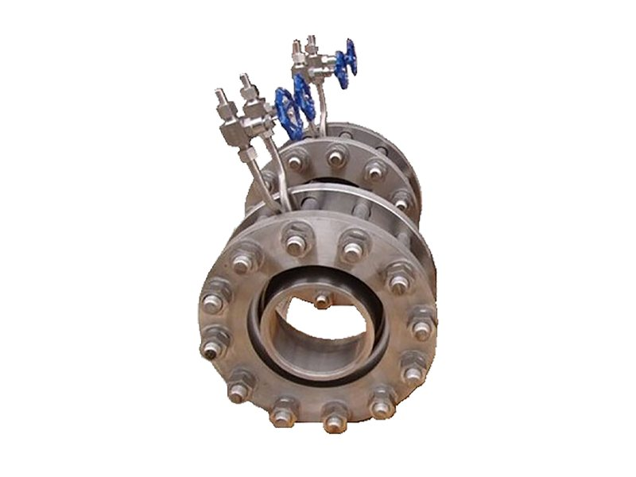
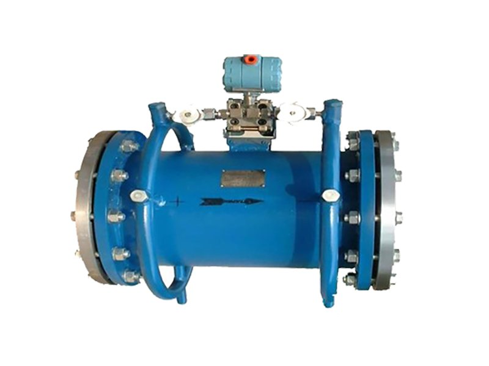
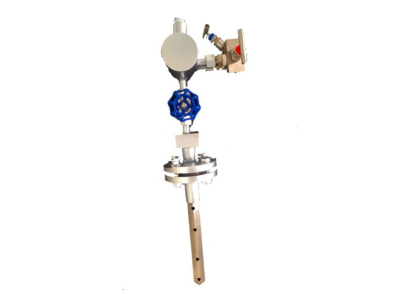
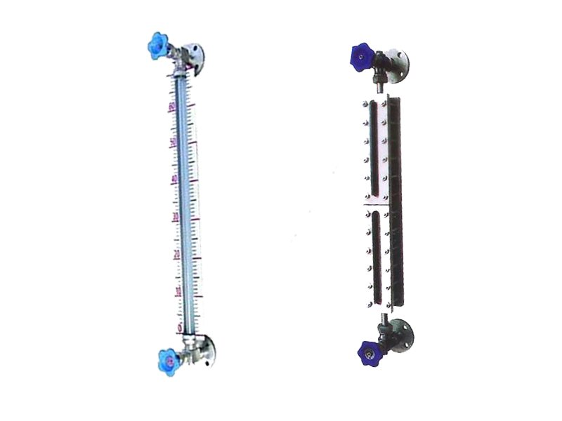

PRODUCTS
产品中心
10 大系列，8 个重点行业

流量仪表
电磁流量计
无可动部件的流量测量方案，适用于各类导电解质液体。
查看详情
节流装置
文丘里管
大管径、低流速气体流量精确测量的经典节流装置。
查看详情
流量仪表
V型锥流量计
V 型锥节流结构，长期精度高、脏污介质适应性强。
查看详情
节流装置
喷嘴流量计
差压发生装置，无可动部件，适合高温高压蒸汽流量计量。
查看详情
节流装置
环形孔板流量计
环形通道结构，脏污介质可轻松通过，广泛用于各类流体。
查看详情
节流装置
阿牛巴流量计
巴类差压式流量计，安装简便、压损小、不受磨损影响。
查看详情
节流装置
平衡流量计
多孔孔板结构，兼顾平衡整流与测量精度。
查看详情
节流装置
标准孔板流量计
结构最简单、适应性最强的标准节流装置，含智能补偿型。
查看详情
物位仪表
磁性浮子液位计
磁耦合测量元件，直读式与远传式可选，输出 4~20mA 标准信号。
查看详情
物位仪表
玻璃管（板）液位计
直接显示密闭容器液位，接触件用不锈钢与聚四氟乙烯制造。
查看详情该分类下暂无产品
GET A QUOTE
不确定选哪个型号？
把工况发给我们，帮你选型。